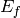
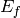

SofQW2 dialog.
Table of Contents
| Name | Direction | Type | Default | Description |
|---|---|---|---|---|
| InputWorkspace | Input | MatrixWorkspace | Mandatory | Reduced data in units of energy transfer DeltaE. The workspace must contain histogram data and have common bins across all spectra. |
| OutputWorkspace | Output | MatrixWorkspace | Mandatory | The name to use for the q-omega workspace. |
| QAxisBinning | Input | dbl list | Mandatory | The bin parameters to use for the q axis (in the format used by the Rebin v1 algorithm). |
| EMode | Input | string | Mandatory | The energy transfer analysis mode (Direct/Indirect) |
| EFixed | Input | number | 0 | The value of fixed energy:  (EMode=Direct) or  (EMode=Indirect) (meV). Must be set here if not available in the instrument definition. (EMode=Direct) or  (EMode=Indirect) (meV). Must be set here if not available in the instrument definition. |
Converts a 2D workspace in units
of spectrum number/energy transfer to
the intensity as a function of momentum transfer
 and energy transfer
and energy transfer  .
.
The rebinning is done as a weighted sum of overlapping polygons. See SofQW v1 for centerpoint binning or SofQW3 v1 for more complex and precise (but slower) binning strategy.
Example - simple transformation of inelastic workspace:
# create sample inelastic workspace for MARI instrument containing 1 at all spectra values
ws=CreateSimulationWorkspace(Instrument='MAR',BinParams='-10,1,10')
# convert workspace into MD workspace
ws=SofQW2(InputWorkspace=ws,QAxisBinning='-3,0.1,3',Emode='Direct',EFixed=12)
print "The converted X-Y values are:"
Xrow=ws.readX(59);
Yrow=ws.readY(59);
for i in xrange(0,20):
print '! {0:>6.2f} {1:>6.2f} '.format(Xrow[i],Yrow[i]),
if (i+1)%10 == 0:
print '!\n',
print '! {0:>6.2f} ------- !'.format(Xrow[20]),
Output:
The converted X-Y values are:
! -10.00 12.79 ! -9.00 17.63 ! -8.00 17.86 ! -7.00 18.12 ! -6.00 18.46 ! -5.00 18.69 ! -4.00 19.24 ! -3.00 19.67 ! -2.00 18.49 ! -1.00 12.00 !
! 0.00 17.08 ! 1.00 22.32 ! 2.00 23.26 ! 3.00 24.46 ! 4.00 25.96 ! 5.00 21.96 ! 6.00 25.10 ! 7.00 33.65 ! 8.00 35.54 ! 9.00 43.86 !
! 10.00 ------- !
Categories: Algorithms | Inelastic